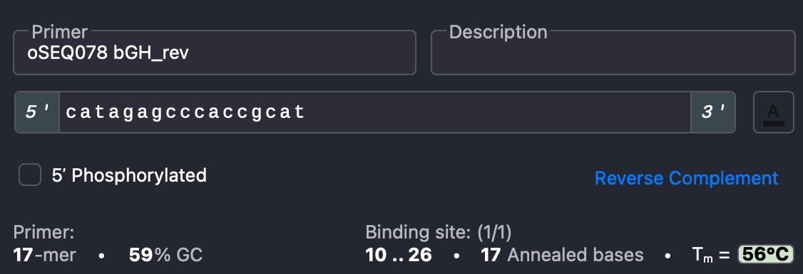

Polymerase chain reaction (PCR)
Polymerase chain reaction, or PCR, is a method to amplify sequences from template DNA using custom short oligonucleotides (primers). The primers can additionally add short new sequences to the 5' or 3' ends of the DNA product.
The identity of the polymerase used in the reaction determines the speed and fidelity of product generation. In lab, we have the following polymerases:
Q5: relatively efficient with high fidelity, recommended for generating fragments for cloning
PrimeSTAR: extremely fast with slight compromises in fidelity, recommended for difficult-to-amplify sequences
Taq: slow with lower fidelity, recommended for screening bacterial colonies (colony PCR) or other large-batch screening
KOD Xtreme: also good for difficult-to-amplify sequences
Protocols for each polymerase are below. After running the reaction, confirm and purify the product. See also the Determining annealing temperatures and Troubleshooting sections.
Q5
We use NEB Q5® High-Fidelity DNA Polymerase (NEB M0491).
Reaction mix:
Reagent |
Amount (µL) |
Notes |
|---|---|---|
DNA template |
1 |
Dilute the DNA template to ~5 ng/µL to add ~5 ng |
Primer 1 |
1.25 |
Use 10 µM primers diluted from stocks |
Primer 2 |
1.25 |
Use 10 µM primers diluted from stocks |
Q5 5X mix |
5 |
Thaw working aliquot from small cold block in Anna (-20ºC) |
dNTPs |
0.5 |
10 mM, thaw working aliquot from Anna (-20ºC) |
Q5 polymerase |
0.25 |
Stored in small cold block in Anna (-20ºC) — keep cold! |
GC enhancer (optional) |
5 |
Use for difficult or high GC templates |
Elga water |
15.75 (10.75) |
Without (with) GC enhancer |
Total |
25 |
Thermocycler protocol:
Step |
Temperature (ºC) |
Time |
|---|---|---|
Initial denaturation |
98 |
30 sec |
1. Denaturation
2. Annealing
3. Extension
x 25 cycles
|
98
Ta
72
|
10 sec
10 sec
30 sec/kb
|
Final extension |
72 |
2 min |
Note
There is no need to set at 4ºC infinte hold at the end of the reaction. DNA is quite stable, so it is fine to sit at room temp overnight. A 4ºC infinte hold decreases the lifetime of the thermocycler. For longer-term storage, keep at 4ºC or -20ºC.
PrimeSTAR
We use Takara PrimeSTAR® Max DNA Polymerase Ver.2 (Takara R047A).
Note
Most reactions will run well at the default Ta of 55ºC. You can change the Ta if you need to optimize the reaction.
Reaction mix:
Reagent |
Amount (µL) |
Notes |
|---|---|---|
DNA template |
1 |
Dilute the DNA template to ~5 ng/µL to add ~5 ng |
Primer 1 |
1.25 |
Use 10 µM primers diluted from stocks |
Primer 2 |
1.25 |
Use 10 µM primers diluted from stocks |
PrimeSTAR Max 2X Premix |
12.5 |
Stored in small cold block in Anna (-20ºC) |
Elga water |
9 |
|
Total |
25 |
Thermocycler protocol:
Step |
Temperature (ºC) |
Time |
|---|---|---|
Initial denaturation |
98 |
30 sec |
1. Denaturation
2. Annealing
3. Extension
x 30 cycles
|
98
55
68
|
10 sec
5 sec
5 sec/kb
|
Final extension |
68 |
2 min |
You can also use the two-step reaction for enhanced specificity (less off-target binding):
Step |
Temperature (ºC) |
Time |
|---|---|---|
Initial denaturation |
98 |
30 sec |
1. Denaturation
2. Extension
x 30 cycles
|
98
68
|
10 sec
5 sec/kb
|
Final extension |
68 |
2 min |
Source: Takara PrimeSTAR® Max DNA Polymerase Ver.2
Tip
You can scale down the reaction volume to 10 µL and increase the cycle number to 60 to increase the total amount of DNA. At smaller scales, PrimeSTAR can be cheaper than other polymerases!
Tip
In a pinch, you can use a glycerol stock as template for a PrimeSTAR reaction. This has worked well for DSP.
Taq
We use Apex Taq RED Master Mix, 2X (Genesee Scientific 42-138B). If you are using Taq for a colony PCR, see the full protocol for steps beyond running the reaction itself.
Reaction mix:
Reagent |
Amount (µL) |
Notes |
|---|---|---|
Primer 1 |
0.75 |
Use 10 µM primers diluted from stocks |
Primer 2 |
0.75 |
Use 10 µM primers diluted from stocks |
Taq 2X MM |
7.5 |
Thaw from Anna (-20ºC) |
Elga water |
6 |
|
Total |
15 |
Scale up as needed, 1X per colony |
Thermocycler protocol:
Step |
Temperature (ºC) |
Time |
|---|---|---|
Initial denaturation |
95 |
3 min |
1. Denaturation
2. Annealing
3. Extension
x 30 cycles
|
95
Ta
72
|
30 sec
30 sec
1 min/kb
|
Final extension |
72 |
5 min |
KOD Xtreme
We use KOD Xtreme Hot Start DNA Polymerase (Sigma Aldrich 71975-3). This polymerase is very good for amplifying difficult templates (e.g., CAG promoter, transcription factor coding sequences, GC-rich sequences). However, it is relatively expensive, so you might want to attempt a PCR with a different polymerase first.
Reaction mix:
Reagent |
Amount (µL) |
Notes |
|---|---|---|
DNA template |
1 |
Use template that is ~100-500 ng/µL |
Primer 1 |
1 |
Use 10 µM primers diluted from stocks |
Primer 2 |
1 |
Use 10 µM primers diluted from stocks |
2x Buffer |
10 |
Thaw from box in Anna (-20ºC) |
dNTPs |
4 |
Thaw working aliquot from box in Anna (-20ºC) |
KOD Polymerase |
0.4 |
Stored in small box in Anna (-20ºC) — keep cold! |
Elga water |
3.5 |
|
Total |
20.9 |
Thermocycler protocol:
Step |
Temperature (ºC) |
Time |
|---|---|---|
Initial denaturation |
94 |
2 min |
1. Denaturation
2. Annealing
3. Extension
x 30 cycles
|
98
Ta (or 61)
68
|
10 sec
30 sec
1 min/kb
|
Final extension |
68 |
2 min |
Confirm and purify
DpnI digest
If you plan to use your PCR product in a cloning reaction, it is helpful to perform a DpnI digestion on your PCR product before purification. DnpI is a restriction enzyme that recognizes dam methylation, which is found only on cell-derived DNA—i.e., your plasmid template, but not the newly synthesized DNA from the PCR. This chops up any of the original template from the reaction, which is particularly useful if the template plasmid has the same antibiotic resistance as the product of your downstream assembly reaction. This can be performed in parallel with gel electrophoresis (below).
Add 0.5 µL DpnI per 25 uL PCR directly to the PCR tube.
Pipet up and down or flick the tube to mix.
Incubate at 37ºC for 1 hour in the water bath. Avoid prolonged incubation, as the enzyme may promiscuously cut non-methylated GATC sites in your PCR product.
Immediately proceed to purification (below) or store short-term at 4ºC.
Confirm
To check that your PCR reaction was successful, visualize the product(s) using gel electrophoresis. The gel can help you confirm that you have the correct number of products (usually just one) of the correct length. This can be performed in parallel with a DpnI digestion (above).
Follow the steps in the gel electrophoresis protocol, with the following parameters:
Combine ~2 µL of your PCR product with 0.5-1 µL of 6X Loading Dye. This can be done in a small droplet on a piece of parafilm.
Use a comb with small wells.
For amplicons >500 bp: Use a 1% gel (100 mg agarose per 10 mL 1xTAE buffer) and run at 100 V for 25 minutes.
For amplicons <500 bp: Use a 2-3% gel and run at 90 V for 30-40 minutes.
Purify
If the gel shows a single band at the size you expect for your PCR product, you can purify the remaining product directly. Follow the steps in the DNA cleanup protocol.
Sometimes, PCR reactions will result in off-target amplification, which will likely cause problems in downstream cloning steps. If this is the case, you can run the entire volume of the PCR product on a gel and cut out the band of the correct size. See the gel extraction protocol for details.
Calculating annealing temperatures
To run the PCR, you’ll need an annealing temperature (Ta) specific to your primers. The NEB Tm Calculator provides one estimate, but calculating the annealing temperature from the melting temperatures provided by SnapGene is better.
Find the melting temperature (Tm) calculated by SnapGene for your forward primer.

The SnapGene Tm estimate is on the right side of the primer window. Click the boxed number for more information on SnapGene’s calculations.
Adjust this value based on the polymerase type. For Taq, subtract 0-5ºC. For Q5 and others, add ~10ºC.
“When PCR is performed using a traditional polymerase such as Taq, the optimal annealing temperature for the PCR reaction is about 0–5°C below the primer Tm values.”
“We recommend that when a polymerase with a dsDNA-binding domain is used, the annealing temperature for the PCR reaction should be about 6–12°C (for Phusion or Phire or Q5 polymerase) … above the primer Tm values calculated by our software.”
Calculate the adjusted Tm for the reverse primer. Choose the lower of these values as the Ta for the reaction.
{kind=link}
Tip
The easiest way to troubleshoot a PCR is to change the annealing temperature: If you obtained no product (no band on the gel), try decreasing the Ta by a few degrees. This increases the amplification while reducing specificity.
PCR variations
Touchdown PCR
One method to PCR a difficult product is to start at a high annealing temperature (Ta) and “touchdown” by progressively decreasing the Ta. This way, the most specific product is amplified first, followed by less specific (but more efficient) ones.
Annealing temperature at each cycle:
Cycle # |
Ta |
|---|---|
1 |
72°C |
2 |
71°C |
3 |
70°C |
4 |
69°C |
… |
… |
n |
Predicted Ta |
Repeat last cycle (30-n) times |
Predicted Ta |
Note
You could go even lower than the predicted Ta (we’ve gone down to 57°C as a robust protocol).
Two-phase PCR
When using primers with long overhangs, the Tm when the primer initially binds to the template DNA (at the 5’ end only) will be much lower than the Tm when the entire primer binds to newly synthesized DNA in subsequent cycles. To enable initial amplification but retain specificity overall, you can perform a two-phase PCR.
In the first phase (cycles 1-5), use the Ta calculated from the Tm of the primer sequence that binds to the template (without the overhang, i.e., the 3’ end complementary to the template DNA).
In the second phase (cycles 6-30), increase the Ta to the value calculated for the entire primer, as most amplification at this point will occur by binding to newly synthesized DNA.
Temperature gradient PCR
When no amplification occurs, a common troubleshooting tip is to reduce the Ta by a few degrees. However, if this fails, or if it causes significant off-target bands, a more efficient way to identify the optimal Ta is by running a temperature gradient.
To do so, mix a 50-µL reaction (2x volumes above) and split it into 4 tubes of 12.5 µL each. Using the large thermocyclers, set the temperature at the annealing step to be a gradient across the sample plate. Each column will have a different temperature. Then, place your 4 tubes in different columns to simultaneously run reactions at 4 Ta’s.
Because you’ve scaled down the volume, the concentration of purified product from one of these PCRs will be low. If reactions at multiple Ta’s produce strong bands on the gel, you can combine these in downstream purification steps. Otherwise, set up a new 25-µL (or 50-µL, if the band is still faint) reaction with the optimal Ta.
Overlap extension PCR
It is possible to combine two overlapping fragments into a single larger fragment via PCR. This is useful for reducing the number of fragments added to a Gibson assembly. To do so, perform a PCR with the following parameters:
Template: add 5 ng of each fragment
Forward primer: use a forward primer that binds to the 5’ end of the 5’ fragment (i.e., the forward primer used in the initial PCR for a first PCR fragment)
Reverse primer: use a reverse primer that binds to the 5’ end of the 3’ fragment (i.e., the reverse primer used in the initial PCR for a second PCR fragment)
Polymerase: if applicable, the polymerase used to amplify the initial fragments
Ta: determined as usual for the primer pair; if the Tm’s of the primers are quite different, you may need to optimize the Ta using the strategies above
This works because the initial fragments will bind to each other in their overlapping region during the first annealing step. Then, each fragment can be extended by the polymerase, using the other fragment as a template. This generates full-length product in the first few cycles of the reaction. The added primers amplify this product in later cycles.
Troubleshooting
No product (no band on the gel)
Re-dilute your template and/or primers
Optimize the annealing temperature, using one or more of the strategies above
Increase the extension time by 5-10 seconds
Add GC enhancer to the reaction
For long amplicons, split the reaction into two (don’t forget to include overlap in these fragments as needed)
If nothing works, try the KOD Xtreme polymerase—very expensive but very effective!
Off-target bands or smear on the gel
Increase the annealing temperature
Decrease the extension time (especially relevant if you were running a longer PCR simultaneously)
Remove GC enhancer from the reaction
Use a different template—look for one without known off-target binding sites or other potentially similar sequences
Scale up the reaction to 50 µL and gel extract the correct band
If the concentration is very low after gel extracting, use that product as the template in a new reaction